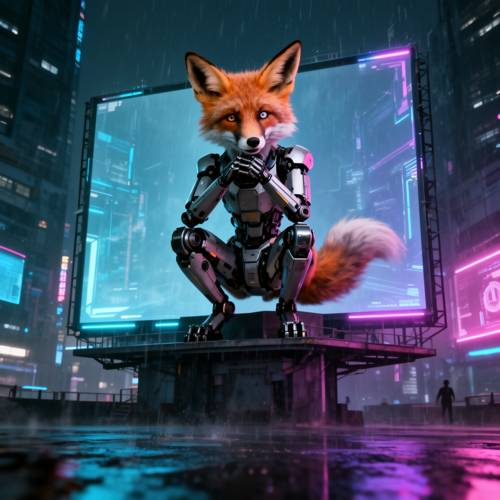
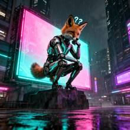
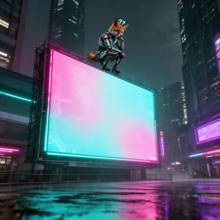
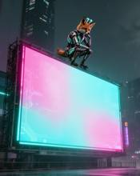

World Knowledge — In a Cyberpunk-style rainy night city, a mechanical fox is squatting o
In a Cyberpunk-style rainy night city, a mechanical fox is squatting on a huge billboard. It looks confused and looks like a thinker for Rodin.

Direct — one call, no iterationContinuum — Qwen3.8-27B + FLUX.2-dev
Judge — Direct
PASSWorld Knowledge — The mechanical fox is depicted in a squatting pose with its chin resting on its clasped hands, which is a clear visual reference to the famous sculpture 'The Thinker' by Rodin.
PASSStyle — The image is set in a rainy city at night, featuring tall buildings, wet reflective surfaces, and large billboards with glowing neon blue and pink lights, all of which are characteristic elements of the Cyberpunk style.
FAILAttribute - Expression — The fox's facial expression is largely neutral. While its head is tilted and its eyes are different (one organic, one possibly mechanical), it does not convey a clear, unambiguous emotion of confusion.
PASSRelationship - Similarity — The pose of the mechanical fox, squatting with its chin propped on its hands, is very similar to the seated, contemplative posture of the figure in Rodin's sculpture 'The Thinker'.
PASSGrammar - Pronoun Reference — The pronoun 'It' refers to the 'mechanical fox'. The central subject of the image is indeed a creature with the head and tail of a fox and a mechanical, robotic body, thus fulfilling the description of a mechanical fox.
Judge — Continuum
PASSWorld Knowledge — The mechanical fox is depicted in a squatting pose with its chin resting on its hand, which is a clear visual reference to the famous sculpture 'The Thinker' by Auguste Rodin.
PASSStyle — The image features a rainy night scene in a city with towering skyscrapers, wet reflective surfaces, and prominent neon lighting in pink and cyan, all of which are characteristic elements of the Cyberpunk style.
PASSAttribute - Expression — The mechanical fox has two stylized question marks floating above its head, a direct visual cue for confusion. Its pensive posture also contributes to this expression.
PASSRelationship - Similarity — The fox is posed in a squatting position with one elbow on its knee and its chin resting on its hand, directly mimicking the contemplative pose of Rodin's sculpture 'The Thinker'.
PASSGrammar - Pronoun Reference — The image correctly depicts the 'mechanical fox' as the entity that is both confused (indicated by question marks) and posed like 'The Thinker', correctly resolving the pronoun 'It' from the prompt.
What the agent did
Thinking
User's prompt: "In a cyberpunk-style rainy night city, a mechanical fox crouches on top of a giant billboard. It looks confused, like Rodin's 'The Thinker.'" So what I need: cyberpunk-style rainy night city, a giant billboard, and on top of that billboard a mechanical/robotic fox crouching in "The Thinker" pose — one hand propping up the chin, elbow on the knee, the classic Rodin pose. And a confused expression. First let me generate with flux2-dev. Prompt: "A mechanical robotic fox crouched on top of a giant glowing billboard in a cyberpunk rainy night city, the fox sitting in the pose of Rodin's 'The Thinker' — one paw propping up its chin, elbow on its knee, hunched, deep in thought, with a puzzled confused expression. Neon signs, rain streaks, reflections, cinematic, night." Let me build a good prompt with visual details. Then inspect, edit, and mark the best. Let me generate the first image at 1024x1024, or maybe a different aspect ratio. The default is 1024x1024. The image size is fixed by the harness — I'll leave it at the default. Let me write the prompt: "Nighttime cyberpunk city drenched in rain. A robotic fox with exposed metal joints and glowing cyan circuits crouches on top of a giant towering billboard. The fox sits in the pose of Rodin's 'The Thinker': hunched forward, one paw propping up its chin, elbow resting on its knee, deep in thought, with a puzzled confused expression, tilted head. Rain falling, neon signs in pink, cyan, and purple, wet streets reflecting the lights below, distant skyscrapers, cinematic lighting, dramatic." Generate it.
Step 1 — `generate_image`
{
"model": "flux2-dev",
"prompt": "A mechanical robotic fox crouched on top of a huge glowing billboard in a cyberpunk city on a rainy night. The fox sits in the pose of Rodin's The Thinker: hunched forward, one paw propping its chin, elbow resting on its knee, deep in thought, head tilted with a confused, puzzled expression, small mechanical ears, metal plating with glowing cyan circuit lines. Heavy rain falling, wet surfaces, neon signs in pink, cyan and purple, reflections on the billboard and wet street far below, dense skyscrapers in the background, dramatic cinematic lighting, moody atmosphere."
}
Result img_0

Thinking
The image is actually not bad. Let me check the details: - Cyberpunk rainy night city: Yes, rain, neon, skyscrapers ✓ - Mechanical fox: Yes, a fox with a real head and mechanical body ✓ - Giant billboard: Hmm. The fox is sitting on a rock/stone pedestal in the foreground, and behind it there's a giant billboard (a pink/teal screen). The prompt says "crouches on top of a giant billboard" — meaning the fox should be on top of the billboard, not on a rock with the billboard behind it. This is a compositional deviation. Also, the "???" floating above the head — this is a cartoonish text overlay that conveys confusion, but it's a bit meme-y. It could be left in or removed. The prompt asks that the fox "looks confused" — the ?? conveys that, but it's more of an overlay than an expression. The fox's face itself looks pretty serious/contemplative. Hmm. The Thinker pose: The fox is crouching with one paw raised near the chin. Actually, the pose is reasonably close to a Thinker-ish crouch. Let me look: sitting on a rock, one arm propping up the chin, knees bent. Not bad. Main fix: the fox should be crouching on top of the giant billboard itself, not on a rock in front of it. Let me edit: "Move the fox onto the top edge of the giant neon billboard so that it crouches on the billboard, removing the rock pedestal beneath it." Actually, a better edit instruction: "The fox is sitting on top of the giant billboard, crouched on the upper edge of the billboard structure; the rock pedestal beneath it is removed." This might be structurally difficult. Alternatively, I could regenerate with a clearer composition: fox on top of the billboard. First let me try editing with flux2-dev. Instruction: "The mechanical fox sits crouching on top of the giant billboard, on the upper edge of the billboard; remove the dark stone pedestal it's currently sitting on, and make the top edge of the billboard the surface it's crouching on." Hmm, but the billboard is behind the fox and lower than the fox. In the current image, the billboard is behind. To place the fox on top of the billboard, the billboard would need to be above/around it. It might work: "Climb the fox onto the top edge of the giant neon billboard so its hind legs and body are on the billboard surface, and remove the stone pedestal." Let me also consider the "???" — it's a nice cue for confusion. It could be kept. It's a bit cartoonish, but it conveys "confused." Actually, the user wants the fox to "look confused" — the floating ?? makes that clear. It could be kept, though I might want to reduce its prominence. I'll decide after the fix. Let me mark img_0 as best for now (it's a reasonable image), and then edit. Actually, is this image good enough to be my best? It captures most of the elements, but the "on top of the billboard" part is wrong — the fox is in front of the billboard on a rock. That's a deviation from a core element. Let me mark it anyway (since it's the best at the moment) and try the edit.
Model
The first generation is strong — the cyberpunk rainy night, neon, and the mechanical fox in a Thinker-like crouching pose are all there. One problem: the fox is crouching on a rock pedestal **in front of** the billboard, not **on top of** it. I'll fix the composition.
Step 2 — `mark_best`
{
"image": "img_0",
"reason": "Good baseline: mechanical fox in Thinker pose, confused \"??\" cue, cyberpunk rainy neon city. Flaw: fox sits on a rock pedestal in front of the billboard rather than on top of it."
}
Step 3 — `edit_image`
{
"image": "img_0",
"model": "flux2-dev",
"prompt": "Move the mechanical fox up onto the top edge of the huge neon billboard so it is crouching directly on top of the billboard structure. Remove the dark stone pedestal block the fox was sitting on. Keep the fox's Thinker pose, confused expression, and the \"??\" above its head exactly as they are."
}
Result img_1

Thinking
img_1 is much better — the fox is now perched on the top edge of a huge billboard, in a Thinker-like crouching pose (chin propped on paw), with a "???" for the confused expression, and it's a rainy cyberpunk city with reflections on the wet ground. Let me check the details: - Fox on top of the billboard ✓ (crouching on the top edge) - Thinker pose: hunched over, one paw propping up the chin ✓ - Confused: "???" ✓, and the tilted head - Cyberpunk rainy night city ✓ - Mechanical fox ✓ Minor issues: The billboard is quite large and the fox is relatively small, but that's fine — it's a "huge billboard." The fox looks a bit small, but it's acceptable. The tail is blending into the edge. The pose: is the front leg extending downward from the edge of the billboard? It looks like it's crouching on top, no problem. Let me zoom in and inspect the fox to verify the quality of the pose and the "???" text.
Model
Much better — the fox is now on top of the billboard. Let me inspect the fox closely to verify the pose, expression, and details.
Step 4 — `inspect_region`
{
"image": "img_1",
"roi": "the mechanical fox on top of the billboard",
"padding": 0.15
}
Result img_2

Thinking
Zooming in: the fox is perched on the upper edge of the billboard, in a hunched Thinker pose with a paw under its chin, head tilted, with a "???" confusion indicator above its head. The mechanical body has cyan glow lines, the head has a fox fur texture, ears, and a fluffy tail. All elements are present: - Cyberpunk-style rainy night city ✓ (rain visible, neon, skyscrapers, wet ground reflections) - Mechanical fox ✓ - Crouching on a giant billboard ✓ (perched on the upper edge) - Looks confused ✓ ("???" + tilted head, paw on chin) - Thinker-like pose ✓ (chin propped on hand, hunched over) This matches the prompt well. The "???" is a bit cartoonish, but it clearly conveys the confusion. The Thinker pose could be more hunched over, but it reads clearly. I think this is good enough to stop here. I'll mark img_1 as the best and stop.
Step 5 — `mark_best`
{
"image": "img_1",
"reason": "Fox now crouches on top of the huge billboard in a Thinker pose (paw propping chin, hunched, tilted head) with \"??\" confusion cues, in a rainy neon cyberpunk city \u2014 all prompt elements present."
}
Thinking
Done. Marked img_1 as the best and verified it via a zoomed-in crop. All elements of the prompt are satisfied: 1. Cyberpunk-style rainy night city ✓ 2. Mechanical fox ✓ 3. Crouching on top of a huge billboard ✓ 4. Looks confused ✓ (?? + tilted head) 5. Like Rodin's "The Thinker" ✓ (chin resting on a paw, hunched over, elbow on knee) I'll stop here and give the user a summary.
Model
Done. The final image (img_1, marked as best) delivers every element of your prompt: - **Cyberpunk rainy night city** — heavy rain, neon signage in pink/cyan/purple, dense skyscrapers, and wet pavement mirroring the lights. - **Mechanical fox** — real fox head and tail fused with a plated robotic body, glowing cyan circuitry. - **Squatting on a huge billboard** — perched on the top edge of the giant glowing billboard, dominating the frame. - **Confused + Rodin's Thinker** — hunched crouch with one paw propping its chin, head tilted, and floating "??" glyphs above its head to sell the bewilderment. The zoomed inspection confirmed the pose, expression, and details all read clearly at full resolution, so I stopped here rather than risk drifting the composition.